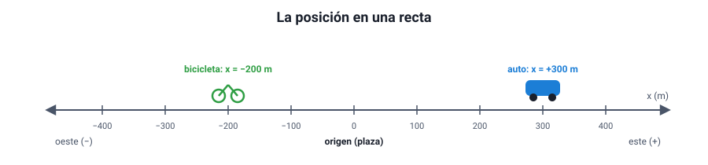
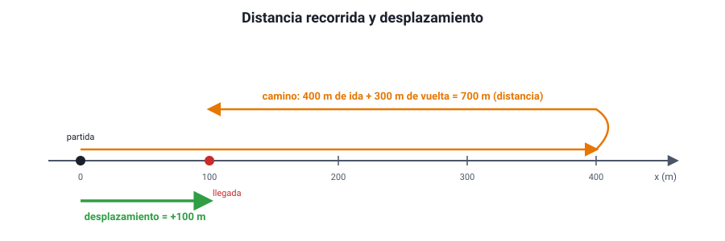
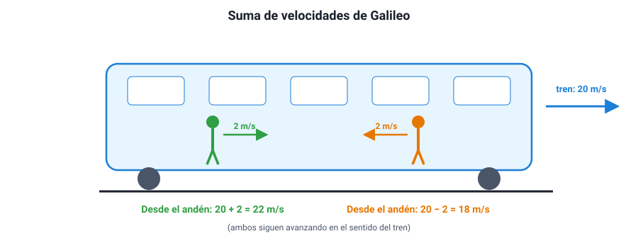
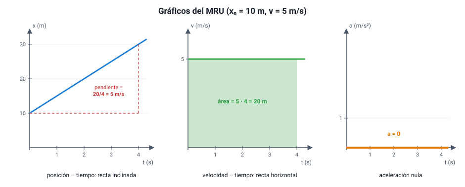
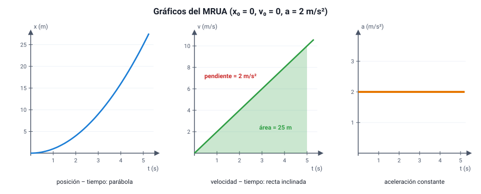
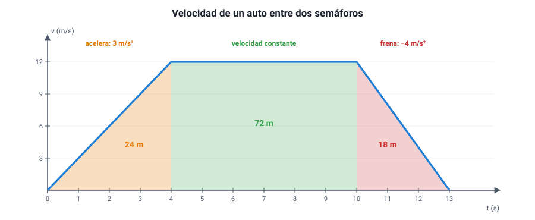
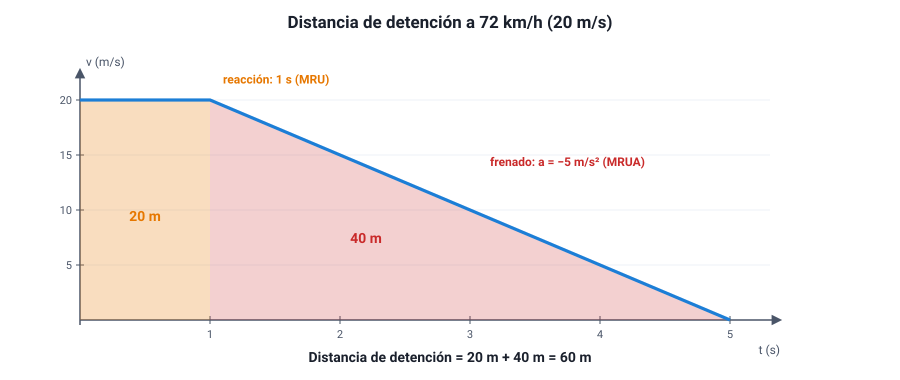

Capítulo 5: Cinemática: descripción del movimiento
Área temática: Mecánica
Vas en la micro y te parece que estás quieto, pero alguien en el paradero te ve pasar a 40 km/h. Un auto marca 100 km/h en el velocímetro, pero tardó dos horas en recorrer 150 km. Una pelota lanzada hacia arriba se detiene un instante en lo más alto y, sin embargo, sigue acelerando. Para describir un movimiento sin contradicciones como estas hace falta un lenguaje preciso, y ese lenguaje es la cinemática: la parte de la mecánica que describe cómo se mueven los cuerpos, sin preguntarse todavía por qué (eso es la dinámica, capítulo 6).
En este capítulo vas a aprender qué es un sistema de referencia y por qué todo movimiento es relativo; a distinguir trayectoria, posición, distancia recorrida y desplazamiento; a diferenciar rapidez de velocidad, media e instantánea; qué es la aceleración y qué significa su signo; cómo se suman las velocidades según la relatividad de Galileo; y cómo se describen con ecuaciones y gráficos los dos movimientos que pide el temario: el movimiento rectilíneo uniforme (MRU) y el movimiento rectilíneo uniformemente acelerado (MRUA), incluida la caída libre.
Este capítulo en la PAES 2027. Cubre los cuatro primeros conocimientos del área Mecánica del temario DEMRE: la descripción del movimiento (sistema de referencia, trayectoria, posición, distancia, desplazamiento, rapidez media, velocidades media e instantánea, aceleración), la relatividad de Galileo en movimientos rectilíneos uniformes, y el MRU y el MRUA con su ecuación de itinerario y sus gráficos. Los gráficos de movimiento son de lo más preguntado del eje: la sección 8 está dedicada a leerlos.
1. Conceptos clave
| Concepto | Definición |
|---|---|
| Cinemática | Parte de la mecánica que describe el movimiento sin considerar sus causas |
| Sistema de referencia | Cuerpo u observador desde el cual se describe un movimiento, junto con un origen, ejes y un reloj |
| Partícula | Modelo de un cuerpo cuyo tamaño no importa para describir su movimiento |
| Posición (x) | Ubicación de un cuerpo respecto del origen del sistema de referencia; puede ser positiva o negativa |
| Trayectoria | Línea formada por las posiciones sucesivas de un cuerpo; su forma depende del sistema de referencia |
| Distancia recorrida (d) | Largo total del camino seguido por el cuerpo; es escalar y nunca negativa |
| Desplazamiento (Δx) | Cambio de posición: posición final menos inicial. Es vectorial: tiene magnitud, dirección y sentido |
| Escalar | Magnitud que queda definida con un número y su unidad (tiempo, distancia, rapidez) |
| Vector | Magnitud que además necesita dirección y sentido (desplazamiento, velocidad, aceleración) |
| Rapidez media | Distancia recorrida dividida por el tiempo empleado |
| Velocidad media | Desplazamiento dividido por el tiempo empleado; es un vector |
| Velocidad instantánea | Velocidad en un instante dado; en un gráfico posición–tiempo es la pendiente en ese punto |
| Aceleración | Cambio de la velocidad por unidad de tiempo: a = Δv / Δt; se mide en m/s² |
| Relatividad de Galileo | Principio según el cual las leyes del movimiento son las mismas en todos los sistemas que se mueven con velocidad constante entre sí; las velocidades se suman o restan según el sistema de referencia |
| Velocidad relativa | Velocidad de un cuerpo medida desde otro que también se mueve |
| MRU | Movimiento rectilíneo uniforme: trayectoria recta y velocidad constante (aceleración nula) |
| MRUA | Movimiento rectilíneo uniformemente acelerado: trayectoria recta y aceleración constante |
| Ecuación de itinerario | Ecuación que da la posición del cuerpo en función del tiempo, x(t) |
| Pendiente | Inclinación de una recta en un gráfico: cambio en el eje vertical dividido por el cambio en el horizontal |
| Área bajo la curva | En un gráfico velocidad–tiempo, representa el desplazamiento; en uno aceleración–tiempo, el cambio de velocidad |
| Caída libre | Movimiento de un cuerpo bajo la sola acción de la gravedad; es un MRUA con aceleración g ≈ 9,8 m/s² |
2. Sistema de referencia, posición y trayectoria
a. Todo movimiento es relativo
Decir que algo «se mueve» no tiene sentido si no se dice respecto de qué. Una pasajera sentada en un bus está en reposo respecto del bus y, a la vez, en movimiento respecto de la calle. Las dos afirmaciones son verdaderas: describen el mismo hecho desde dos observadores distintos.
Un sistema de referencia es el cuerpo u observador desde el cual se describe el movimiento, junto con tres cosas que permiten medirlo:
- un origen (el punto cero),
- ejes con un sentido positivo (por ejemplo, hacia el este es positivo),
- un reloj para medir el tiempo.
Reposo y movimiento dependen del observador. Un cuerpo está en movimiento respecto de un sistema de referencia si su posición en ese sistema cambia con el tiempo. No existe un reposo «absoluto»: la calle misma gira con la Tierra y viaja alrededor del Sol. En la vida cotidiana se usa casi siempre el suelo como sistema de referencia, pero es una elección, no una verdad.
b. La posición
En un movimiento en línea recta, la posición (x) de un cuerpo es su ubicación medida desde el origen, con signo:

- x = +300 m significa 300 m hacia el lado positivo del origen.
- x = −200 m significa 200 m hacia el lado negativo.
- Una posición negativa no es «menos que nada»: solo indica el lado.
La posición depende de dónde se ponga el origen. Si en la figura se pusiera el origen en la bicicleta, el auto estaría en x = +500 m. Lo que no cambia al mover el origen son las distancias entre cuerpos ni los desplazamientos.
c. La trayectoria
La trayectoria es la línea formada por todas las posiciones que ocupa un cuerpo. Puede ser recta (rectilínea), circular, parabólica o de cualquier forma. En este capítulo se estudian movimientos rectilíneos.
La forma de la trayectoria también depende del sistema de referencia:
| Situación | Trayectoria vista desde el vehículo | Trayectoria vista desde el suelo |
|---|---|---|
| Un pasajero deja caer una llave dentro de un tren que avanza con velocidad constante | Recta vertical | Curva (parábola) |
| Un punto del borde de la rueda de una bicicleta que avanza | Circunferencia (visto desde el eje de la rueda) | Una curva con arcos llamada cicloide |
Error típico. Pensar que la llave «se queda atrás» dentro del tren porque el tren avanza. Si el tren va con velocidad constante, la llave ya tenía la velocidad del tren al soltarse y cae a los pies del pasajero. Desde el andén, en cambio, se ve avanzar mientras cae y describir una curva. Ninguna de las dos descripciones está equivocada.
d. El modelo de partícula
Para describir el movimiento de un auto en una carretera de 300 km no importa su tamaño ni cómo giran sus ruedas: basta con saber dónde está. En esos casos se modela el cuerpo como una partícula, un punto que tiene la posición del cuerpo. Es un modelo útil cuando el tamaño del cuerpo es pequeño comparado con las distancias que recorre. No sirve, por ejemplo, para estudiar cómo se estaciona el mismo auto en un espacio estrecho.
3. Distancia y desplazamiento; rapidez y velocidad
a. Distancia recorrida y desplazamiento
Son dos magnitudes distintas que la prueba pone a competir con frecuencia:
| Distancia recorrida (d) | Desplazamiento (Δx) | |
|---|---|---|
| Qué mide | El largo total del camino seguido | El cambio neto de posición: Δx = xfinal − xinicial |
| Tipo de magnitud | Escalar | Vectorial (tiene sentido: signo en una recta) |
| Puede ser negativa | Nunca | Sí, si el cuerpo termina del lado negativo de donde partió |
| Puede ser cero con el cuerpo moviéndose | No | Sí, si vuelve al punto de partida |

Una vuelta a la pista. Una atleta da una vuelta completa a una pista de 400 m y termina en la línea de partida. Distancia recorrida: 400 m. Desplazamiento: 0 m, porque su posición final coincide con la inicial.
Ida y vuelta parcial. Un corredor va desde x = 0 hasta x = 400 m y luego vuelve hasta x = 100 m. Distancia: 400 m + 300 m = 700 m. Desplazamiento: 100 m − 0 m = +100 m.
La magnitud del desplazamiento nunca es mayor que la distancia recorrida. Son iguales solo si el cuerpo se mueve en línea recta sin devolverse.
b. Rapidez media y velocidad media
Con las dos magnitudes anteriores se definen dos formas de medir «qué tan rápido»:
rapidez media = d / Δt velocidad media = Δx / Δt
La unidad del SI es el metro por segundo (m/s). En la vida diaria se usa el kilómetro por hora (km/h).
Cómo convertir. 1 m/s = 3,6 km/h. Para pasar de km/h a m/s se divide por 3,6; para pasar de m/s a km/h se multiplica por 3,6. Así, 72 km/h = 20 m/s y 10 m/s = 36 km/h. La razón: 1 km/h = 1 000 m / 3 600 s.
El corredor de la figura 2 tardó 200 s en todo el recorrido.
- Rapidez media = 700 m / 200 s = 3,5 m/s.
- Velocidad media = +100 m / 200 s = +0,5 m/s.
La velocidad media es mucho menor porque la vuelta «deshizo» parte del avance. Si hubiera terminado en el punto de partida, su velocidad media sería cero, aunque su rapidez media seguiría siendo 3,5 m/s.
La rapidez media no es el promedio de las rapideces. Un auto va de Santiago a Rancagua (unos 90 km) a 90 km/h y vuelve a 60 km/h. La rapidez media no es 75 km/h. La ida dura 1 h y la vuelta 1,5 h: 180 km / 2,5 h = 72 km/h. Como pasa más tiempo yendo lento, el resultado queda más cerca de 60 km/h. Hay que calcular siempre distancia total entre tiempo total.
c. Rapidez y velocidad instantáneas
La rapidez media dice poco de lo que pasó en cada momento. Un bus que hace un recorrido urbano con rapidez media de 20 km/h pudo ir a 50 km/h en algunos tramos y estar detenido en otros. La velocidad instantánea es la velocidad en un instante determinado: la que se obtiene con intervalos de tiempo cada vez más pequeños. Su magnitud es la rapidez instantánea, la que muestra el velocímetro de un auto.
Diferencia clave:
- La rapidez es un escalar: solo dice cuánto.
- La velocidad es un vector: dice cuánto, en qué dirección y en qué sentido. Dos autos que se cruzan a 60 km/h en una carretera recta tienen la misma rapidez pero velocidades opuestas: +60 km/h y −60 km/h.
Un cuerpo que gira en una rotonda con rapidez constante cambia su velocidad, porque cambia la dirección del movimiento. Por eso, «velocidad constante» exige a la vez rapidez constante y trayectoria recta.
d. Cómo se mide
Para medir una rapidez media en el laboratorio o en la calle se necesitan dos instrumentos: uno de longitud (huincha, regla, marcas en el suelo) y uno de tiempo (cronómetro, video con marca de tiempo, sensores fotoeléctricos). Para acercarse a la velocidad instantánea se usan intervalos muy cortos: sensores de movimiento, radares o el video en cámara lenta.
Diseñar una medición. Un curso quiere saber si los autos respetan el límite de 50 km/h frente al colegio. Marca dos líneas separadas por 25 m en la vereda y cronometra el tiempo que tarda cada auto en pasar de una a otra. Si un auto tarda 1,5 s, su rapidez media en ese tramo es 25 m / 1,5 s ≈ 16,7 m/s ≈ 60 km/h: iba sobre el límite.
¿Qué limita la confiabilidad de la medición? El tiempo de reacción de quien cronometra (unas décimas de segundo) es comparable con el tiempo medido. Una mejora: separar más las líneas, o grabar en video y contar los cuadros.
4. La aceleración
a. Qué es
La aceleración mide qué tan rápido cambia la velocidad. Si la velocidad de un cuerpo pasa de vi a vf en un tiempo Δt, su aceleración media es:
a = Δv / Δt = (vf − vi) / Δt
Su unidad es el m/s² (metro por segundo, por segundo). Una aceleración de 2 m/s² significa que la velocidad cambia 2 m/s en cada segundo.
Un auto que parte. Un auto pasa de 0 a 27 m/s (unos 97 km/h) en 9 s. Su aceleración media es a = (27 m/s − 0) / 9 s = 3 m/s²: gana 3 m/s de velocidad por cada segundo.
Un bus que frena. Un bus pasa de 15 m/s a 0 en 5 s. a = (0 − 15 m/s) / 5 s = −3 m/s².
Como la velocidad es un vector, hay aceleración cuando cambia cualquiera de sus características: la rapidez, la dirección o el sentido. Un auto que dobla una curva con el velocímetro fijo en 40 km/h está acelerando, porque cambia la dirección de su velocidad.
b. El signo de la aceleración
Este es el punto más confuso del tema. En un movimiento rectilíneo, el signo de la aceleración indica hacia dónde apunta, no si el cuerpo va más rápido o más lento. Lo que decide si el cuerpo acelera (gana rapidez) o frena (pierde rapidez) es la comparación entre el signo de la velocidad y el de la aceleración:
| Velocidad | Aceleración | Qué pasa con la rapidez | Ejemplo (sentido positivo: hacia el este) |
|---|---|---|---|
| + | + | Aumenta | Auto que avanza al este y pisa el acelerador |
| + | − | Disminuye | Auto que avanza al este y frena |
| − | − | Aumenta | Auto que avanza al oeste y pisa el acelerador |
| − | + | Disminuye | Auto que avanza al oeste y frena |
La regla. Si velocidad y aceleración tienen el mismo signo, el cuerpo aumenta su rapidez. Si tienen signos opuestos, la disminuye. Una aceleración negativa no significa necesariamente frenar: depende del signo de la velocidad.
Tres errores que la PAES busca. 1. «Si la velocidad es cero, la aceleración es cero.» Falso: una pelota lanzada hacia arriba tiene velocidad cero en el punto más alto, pero su aceleración sigue siendo la de gravedad. Si fuera cero, la pelota se quedaría flotando. 2. «Si la velocidad es grande, la aceleración es grande.» Falso: un avión que vuela a 900 km/h en línea recta y velocidad constante tiene aceleración cero. 3. «Aceleración negativa significa frenar.» Falso: ver la tabla.
c. Aceleraciones típicas
| Situación | Aceleración aproximada |
|---|---|
| Auto familiar que parte | 2 – 4 m/s² |
| Frenada fuerte de un auto en pavimento seco | 7 – 8 m/s² (en magnitud) |
| Caída libre cerca de la superficie terrestre | 9,8 m/s² |
| Despegue de un avión comercial | ≈ 2 – 3 m/s² |
| Montaña rusa en su punto más exigente | hasta 30 – 40 m/s² |
5. La relatividad de Galileo
a. El principio
A comienzos del siglo XVII, Galileo Galilei propuso un experimento mental: un barco que navega por un mar tranquilo a velocidad constante. Bajo cubierta, sin ventanas, las gotas que caen de una botella caen verticalmente, los peces nadan igual en todas direcciones y una pelota lanzada llega al compañero como en tierra firme. Ningún experimento hecho dentro del barco permite saber si el barco se mueve o está detenido.
Ese es el principio de relatividad de Galileo: las leyes del movimiento son las mismas para todos los observadores que se mueven entre sí con velocidad constante en línea recta. Esos sistemas se llaman sistemas de referencia inerciales. Por eso no sentimos que la Tierra se mueve, y por eso en un avión que vuela sin turbulencia se puede servir un café sin que se derrame.
Hasta dónde vale. El principio se cumple entre sistemas con velocidad constante entre sí (en MRU). Si el sistema acelera —un bus que frena de golpe— sí se nota desde adentro: los pasajeros se van hacia adelante. Por eso el temario lo pide en «movimientos rectilíneos uniformes».
b. La suma de velocidades
Si un cuerpo se mueve con velocidad v' respecto de un sistema (un tren, un río, una escalera mecánica) y ese sistema se mueve con velocidad V respecto del suelo, la velocidad del cuerpo respecto del suelo es:
v = v' + V
con los signos que correspondan en una recta.

Cuatro casos típicos.
- Tren. Un tren va a 20 m/s. Un pasajero camina hacia la parte delantera a 2 m/s respecto del tren. Respecto del andén: 20 + 2 = 22 m/s. Si camina hacia atrás: 20 − 2 = 18 m/s, siempre en el sentido del tren.
- Escalera mecánica. Una escalera sube a 0,5 m/s y una persona sube caminando sobre ella a 1 m/s. Respecto del suelo sube a 1,5 m/s. Si bajara caminando a 1 m/s por la escalera que sube, bajaría a 0,5 m/s respecto del suelo.
- Río. Un bote avanza a 5 m/s respecto del agua en un río cuya corriente va a 2 m/s. A favor de la corriente: 7 m/s respecto de la orilla; contra la corriente: 3 m/s.
- Dos autos. Dos autos van por la misma carretera en sentidos opuestos, a 80 km/h y 100 km/h respecto del suelo. Cada conductor ve acercarse al otro a 80 + 100 = 180 km/h. Si van en el mismo sentido, el más rápido se aleja del otro a 100 − 80 = 20 km/h.
Una forma de no confundirse. Escribe siempre quién se mueve respecto de quién: «velocidad del pasajero respecto del tren», «velocidad del tren respecto del suelo». La suma encadena esas frases: pasajero-tren + tren-suelo = pasajero-suelo. Y elige un sentido positivo antes de sumar.
c. Lo que cambia y lo que no cambia de un sistema a otro
| Magnitud | ¿Depende del sistema de referencia inercial? |
|---|---|
| Posición | Sí (depende del origen y del movimiento del observador) |
| Velocidad | Sí (se suma o resta la del sistema) |
| Trayectoria | Sí (recta en un sistema, curva en otro) |
| Aceleración | No: si los sistemas se mueven entre sí con velocidad constante, todos miden la misma aceleración |
| Intervalos de tiempo y distancias entre dos cuerpos | No, en la física de Galileo |
La última fila tiene una salvedad importante: a velocidades cercanas a la de la luz, la suma de Galileo deja de funcionar y hace falta la relatividad de Einstein. Para todo lo cotidiano —autos, trenes, aviones—, la suma de velocidades de Galileo es excelente.
6. Movimiento rectilíneo uniforme (MRU)
a. Qué lo define
Un cuerpo tiene movimiento rectilíneo uniforme cuando se mueve en línea recta con velocidad constante: recorre distancias iguales en tiempos iguales y nunca cambia de sentido. Su aceleración es cero.
Ejemplos aproximados: un auto con control de crucero en una carretera recta, una escalera mecánica, un objeto en una cinta transportadora, la luz en el vacío. En la realidad casi ningún movimiento es exactamente uniforme, pero muchos lo son durante un tramo.
b. La ecuación de itinerario
Si en t = 0 el cuerpo está en la posición x0 y se mueve con velocidad constante v, su posición en cualquier instante es:
x(t) = x0 + v · t
| Símbolo | Significado | Unidad |
|---|---|---|
| x(t) | Posición en el instante t | m |
| x0 | Posición inicial (en t = 0) | m |
| v | Velocidad (con signo según el sentido) | m/s |
| t | Tiempo transcurrido | s |
Leer una ecuación de itinerario. La posición de un ciclista está dada por x(t) = 50 − 4t (en metros y segundos).
- Parte en x0 = 50 m.
- Su velocidad es v = −4 m/s: se mueve en sentido negativo, hacia el origen.
- En t = 5 s está en x = 50 − 20 = 30 m.
- Pasa por el origen cuando 0 = 50 − 4t, es decir, en t = 12,5 s.
c. Los gráficos del MRU

| Gráfico | Forma | Qué se lee |
|---|---|---|
| Posición – tiempo (x–t) | Recta inclinada | La pendiente es la velocidad. El punto donde corta el eje vertical es x0. Más inclinada = más rápido; pendiente negativa = sentido negativo |
| Velocidad – tiempo (v–t) | Recta horizontal | El valor es la velocidad. El área bajo la recta es el desplazamiento |
| Aceleración – tiempo (a–t) | Recta sobre el eje (a = 0) | No hay aceleración |
Pendiente y área. En la figura 4, entre t = 0 y t = 4 s:
- En el gráfico x–t, la posición pasa de 10 m a 30 m: pendiente = (30 − 10) m / 4 s = 5 m/s, que es la velocidad.
- En el gráfico v–t, el área del rectángulo es 5 m/s · 4 s = 20 m, que es el desplazamiento (30 m − 10 m).
Las dos lecturas dicen lo mismo desde gráficos distintos: es la mejor forma de comprobar un resultado.
d. Encuentros y persecuciones
Cuando dos cuerpos se mueven con MRU por la misma recta, se encuentran cuando están en la misma posición en el mismo instante. Para encontrar ese instante se igualan sus ecuaciones de itinerario.
Dos buses en la Ruta 5. Un bus sale de Talca hacia el norte a 25 m/s. En el mismo instante, otro sale de un punto 90 km al norte de Talca hacia el sur a 20 m/s. Tomando Talca como origen y el norte como positivo:
- Bus 1: x1 = 25 t
- Bus 2: x2 = 90 000 − 20 t
Se encuentran cuando x1 = x2: 25 t = 90 000 − 20 t → 45 t = 90 000 → t = 2 000 s (unos 33 minutos), en x = 25 · 2 000 = 50 000 m, es decir, a 50 km al norte de Talca.
Atajo: como se acercan uno al otro, la rapidez con que se acorta la distancia entre ellos es 25 + 20 = 45 m/s (relatividad de Galileo). El tiempo es 90 000 m / 45 m/s = 2 000 s.
En un gráfico x–t, el encuentro es el punto donde se cruzan las dos rectas.
7. Movimiento rectilíneo uniformemente acelerado (MRUA)
a. Qué lo define
Un cuerpo tiene movimiento rectilíneo uniformemente acelerado cuando se mueve en línea recta con aceleración constante. Su velocidad cambia lo mismo en cada segundo. Si la aceleración va en el mismo sentido que la velocidad, el cuerpo gana rapidez; si va en sentido contrario, la pierde (sección 4).
Ejemplos: un auto que parte en un semáforo con aceleración pareja, un tren que frena al llegar a la estación, una pelota que cae (si se desprecia el aire), un carro que baja por un plano inclinado.
b. Las ecuaciones
Con x0 y v0 la posición y la velocidad en t = 0, y a constante:
v(t) = v0 + a · t
x(t) = x0 + v0 · t + ½ · a · t² (ecuación de itinerario)
v² = v0² + 2 · a · Δx (sin el tiempo)
Y una cuarta, muy útil: como la velocidad cambia de forma pareja, la velocidad media en un MRUA es el promedio de la inicial y la final, vmedia = (v0 + v) / 2, y el desplazamiento es Δx = vmedia · t.
Por qué aparece t² en la posición. En un MRUA la velocidad crece con el tiempo, así que en cada segundo se recorre más que en el anterior. Partiendo del reposo, las distancias recorridas en el primer, segundo, tercer segundo… están en la proporción 1 : 3 : 5 : 7…, y las distancias acumuladas en la proporción 1 : 4 : 9 : 16… (los cuadrados). Es lo que encontró Galileo al hacer rodar esferas por un plano inclinado: la distancia es proporcional al cuadrado del tiempo.
Un auto que parte del reposo. Un auto parte desde un semáforo con aceleración constante de 2 m/s².
- A los 5 s: v = 0 + 2 · 5 = 10 m/s (36 km/h).
- Posición a los 5 s (origen en el semáforo): x = 0 + 0 + ½ · 2 · 5² = 25 m.
- A los 10 s: v = 20 m/s y x = ½ · 2 · 100 = 100 m. En el doble de tiempo recorrió el cuádruple de distancia.
Distancia de frenado. Un auto va a 20 m/s (72 km/h) y frena con aceleración de −5 m/s² hasta detenerse. Con la ecuación sin tiempo: 0 = 20² + 2 · (−5) · Δx → Δx = 400 / 10 = 40 m. Tarda t = (0 − 20) / (−5) = 4 s.
Si el auto fuera al doble de rapidez (40 m/s), la distancia de frenado sería 1 600 / 10 = 160 m: cuatro veces más, porque depende del cuadrado de la velocidad. Por eso los límites de velocidad importan tanto.
c. Los gráficos del MRUA

| Gráfico | Forma | Qué se lee |
|---|---|---|
| Posición – tiempo | Parábola (curva) | La pendiente en cada punto es la velocidad instantánea: si la curva se empina, el cuerpo va cada vez más rápido |
| Velocidad – tiempo | Recta inclinada | La pendiente es la aceleración. El área bajo la recta es el desplazamiento. El corte con el eje vertical es v0 |
| Aceleración – tiempo | Recta horizontal | El valor es la aceleración. El área es el cambio de velocidad |
Leer el gráfico v–t de la figura 5. Entre 0 y 5 s la velocidad sube de 0 a 10 m/s.
- Pendiente = (10 − 0) m/s / 5 s = 2 m/s²: la aceleración.
- Área del triángulo = ½ · 5 s · 10 m/s = 25 m: el desplazamiento. Coincide con el cálculo de la ecuación de itinerario.
d. Caída libre y lanzamiento vertical
Un cuerpo que se mueve solo bajo la acción de la gravedad —sin que el aire influya de forma apreciable— tiene un MRUA con una aceleración dirigida hacia abajo cuyo valor, cerca de la superficie terrestre, es
g ≈ 9,8 m/s² (en muchos ejercicios se aproxima a 10 m/s²)
Tres ideas clave:
- Todos los cuerpos caen con la misma aceleración, sin importar su masa, si no hay aire. Aristóteles sostenía que los cuerpos pesados caen más rápido; Galileo mostró que no, con sus experimentos de planos inclinados y con argumentos. (La famosa escena de Galileo soltando esferas desde la Torre de Pisa probablemente es una leyenda: no hay registro de que la haya hecho.) En 1971, en la Luna, el astronauta David Scott (Apolo 15) soltó a la vez un martillo y una pluma: llegaron juntos al suelo, porque allí no hay aire.
- En la Tierra, el roce con el aire frena más a los cuerpos livianos y extendidos: una hoja de papel extendida cae más lento que una bolita, pero si arrugas la hoja, caen casi juntas. La diferencia la hace el aire, no la masa.
- En un lanzamiento vertical hacia arriba, la aceleración es g hacia abajo durante todo el movimiento: al subir, la velocidad disminuye 9,8 m/s cada segundo; en el punto más alto, la velocidad es cero pero la aceleración no; al bajar, la rapidez aumenta 9,8 m/s cada segundo. El tiempo de subida es igual al de bajada hasta el mismo nivel.
Una piedra lanzada hacia arriba a 20 m/s (usando g = 10 m/s², con el sentido positivo hacia arriba, así que a = −10 m/s²):
- Tiempo de subida: 0 = 20 − 10 t → t = 2 s.
- Altura máxima: 0 = 20² − 2 · 10 · h → h = 20 m.
- Vuelve a la mano a los 4 s, con rapidez de 20 m/s hacia abajo.
El gráfico v–t de este movimiento es una sola recta con pendiente −10 m/s² que cruza el eje del tiempo en t = 2 s: la velocidad pasa de positiva a negativa sin que la pendiente (la aceleración) cambie nunca.
8. Cómo leer los gráficos de movimiento
a. Tres preguntas antes de responder
Casi todas las preguntas de cinemática en la PAES traen un gráfico. Antes de calcular nada, conviene hacerse tres preguntas:
- ¿Qué magnitud está en el eje vertical? Posición, velocidad o aceleración. Un mismo dibujo significa cosas muy distintas en cada caso.
- ¿Qué me piden: una pendiente o un área? La pendiente da la magnitud «siguiente» (de x a v, de v a a). El área bajo la curva da la magnitud «anterior» acumulada (bajo v, el desplazamiento; bajo a, el cambio de velocidad).
- ¿Qué pasa en cada tramo? Los gráficos suelen tener tramos con movimientos distintos: se analizan por separado.
| Si el gráfico es… | Pendiente | Área bajo la curva |
|---|---|---|
| Posición – tiempo | Velocidad | (no tiene significado útil) |
| Velocidad – tiempo | Aceleración | Desplazamiento |
| Aceleración – tiempo | (no se usa en la PAES) | Cambio de velocidad |
b. Un gráfico con tramos

Analizar la figura 6 tramo por tramo.
| Tramo | Qué hace el auto | Aceleración (pendiente) | Desplazamiento (área) |
|---|---|---|---|
| 0 – 4 s | Parte y acelera (MRUA) | 12 / 4 = 3 m/s² | ½ · 4 · 12 = 24 m |
| 4 – 10 s | Velocidad constante (MRU) | 0 | 6 · 12 = 72 m |
| 10 – 13 s | Frena hasta detenerse (MRUA) | −12 / 3 = −4 m/s² | ½ · 3 · 12 = 18 m |
Desplazamiento total: 24 + 72 + 18 = 114 m. Velocidad media en todo el viaje: 114 m / 13 s ≈ 8,8 m/s.
c. Errores que la prueba aprovecha
1. Leer el gráfico equivocado. En un gráfico x–t, una recta horizontal significa que el cuerpo está detenido. En un gráfico v–t, una recta horizontal significa que va con velocidad constante. Es el error más caro del tema.
2. Confundir cruce con encuentro. Si dos rectas se cruzan en un gráfico x–t, los cuerpos están en el mismo lugar: se encuentran. Si se cruzan en un gráfico v–t, solo tienen la misma velocidad en ese instante; pueden estar a kilómetros uno del otro.
3. Olvidar el signo del área. En un gráfico v–t, el área bajo el eje del tiempo es un desplazamiento negativo (el cuerpo va en sentido contrario). Para el desplazamiento se suman las áreas con su signo; para la distancia recorrida se suman todas como positivas.
4. Creer que la curva es la trayectoria. Un gráfico x–t con forma de colina no significa que el cuerpo subió un cerro: puede ser un auto en una calle recta que avanzó, se detuvo y volvió.
d. Cómo reconocer el tipo de movimiento
| Movimiento | Gráfico x–t | Gráfico v–t | Gráfico a–t |
|---|---|---|---|
| Reposo | Horizontal | Sobre el eje (v = 0) | Sobre el eje |
| MRU | Recta inclinada | Horizontal (≠ 0) | Sobre el eje |
| MRUA que aumenta su rapidez | Curva que se empina | Recta que se aleja del eje | Horizontal (≠ 0) |
| MRUA que disminuye su rapidez | Curva que se aplana | Recta que se acerca al eje | Horizontal (≠ 0) |
Un cuerpo cambia de sentido en el instante en que su velocidad pasa por cero: en el gráfico v–t, cuando la recta cruza el eje del tiempo; en el gráfico x–t, en el punto más alto o más bajo de la curva.
e. Una aplicación: la distancia de detención
Cuando un conductor ve un peligro, el auto no empieza a frenar de inmediato. Pasa primero un tiempo de reacción —en promedio 1 segundo para un conductor atento, según CONASET, y bastante más si está cansado, distraído o bebió alcohol— en el que el auto sigue en MRU. Después viene el frenado, que es un MRUA. La distancia de detención es la suma de ambas:

A 72 km/h (20 m/s), con 1 s de reacción y frenado de −5 m/s².
- Reacción: 20 m/s · 1 s = 20 m (el rectángulo).
- Frenado: 20² / (2 · 5) = 40 m (el triángulo).
- Distancia de detención: 60 m.
A 50 km/h (≈ 13,9 m/s), con los mismos datos: reacción ≈ 13,9 m y frenado ≈ 19,3 m, en total unos 33 m, casi la mitad. Esta es la base física de la ley que en 2018 bajó el límite urbano en Chile de 60 a 50 km/h.
Ejemplos PAES resueltos
Cuatro ítems al estilo de la prueba, resueltos paso a paso. Cúbrelos primero y después compara.
Ejemplo 1 (Procesar y analizar la evidencia). Un sensor de movimiento registra la posición de un carro que se mueve por un riel recto:
| Tiempo (s) | 0 | 1 | 2 | 3 | 4 |
|---|---|---|---|---|---|
| Posición (m) | 0 | 0,5 | 2,0 | 4,5 | 8,0 |
¿Cuál de las siguientes conclusiones es coherente con estos datos?
A) El carro se mueve con velocidad constante de 2 m/s. B) El carro se mueve con aceleración constante de 1 m/s². C) El carro se mueve con aceleración constante de 0,5 m/s². D) La aceleración del carro aumenta con el tiempo.
Desarrollo.
- ¿Velocidad constante? En segundos iguales recorre distancias distintas: 0,5 m, 1,5 m, 2,5 m y 3,5 m. No es MRU: A cae. (El 2 m/s de A es la velocidad media de todo el recorrido, 8 m / 4 s: un dato verdadero pero que no describe el movimiento.)
- ¿Aceleración constante? Las distancias de cada segundo crecen de a 1 m (0,5 → 1,5 → 2,5 → 3,5): la proporción 1 : 3 : 5 : 7 del MRUA desde el reposo. Además, x = ½ a t²: con t = 2 s, 2,0 = ½ · a · 4 → a = 1 m/s². Se comprueba con t = 4 s: ½ · 1 · 16 = 8,0 m.
- C es el error de olvidar el ½ al revés (tomar x = a t²). D no calza: si a aumentara, las diferencias entre segundos consecutivos crecerían, y aquí son constantes.
Clave: B.
Lo que evalúa. Reconocer un patrón en una tabla y usar una relación matemática para confirmarlo.
Ejemplo 2 (Planificar y conducir una investigación). Un grupo quiere averiguar si el tiempo que tarda una bolita en bajar por un plano inclinado depende de la masa de la bolita. Tienen tres bolitas de igual tamaño y distinta masa, un riel, un transportador y un cronómetro.
¿Cuál es el diseño adecuado?
A) Soltar cada bolita desde la misma posición del mismo riel, con la misma inclinación, y medir varias veces el tiempo de bajada. B) Soltar las tres bolitas desde la misma altura en rieles de distinta inclinación y medir el tiempo de cada una. C) Soltar la bolita más pesada desde distintas alturas del riel y medir el tiempo que tarda en cada caso. D) Soltar las tres bolitas a la vez por el mismo riel y registrar cuál llega primero al final.
Desarrollo.
- Variables. Independiente: la masa. Dependiente: el tiempo de bajada. Controladas: inclinación, distancia recorrida, tamaño de la bolita y el riel.
- Descartar. B cambia a la vez la masa y la inclinación: no se sabría cuál causó la diferencia. C deja fija la masa y cambia la altura: responde otra pregunta. D pone las bolitas a chocar entre sí en el mismo riel y no mide el tiempo de cada una.
- A varía solo la masa, controla lo demás y repite las mediciones para reducir el error del cronómetro.
Clave: A.
Lo que evalúa. Controlar variables y reconocer la importancia de repetir mediciones. (Si se hace, el resultado es el mismo que obtuvo Galileo: el tiempo no depende de la masa.)
Ejemplo 3 (Evaluar). Una estudiante lanza una pelota verticalmente hacia arriba y afirma: «En el punto más alto la pelota está detenida, así que en ese instante su aceleración es cero».
¿Cuál de las siguientes es la mejor evaluación de la afirmación?
A) Es correcta, porque si la velocidad es cero no puede haber aceleración. B) Es correcta, porque en el punto más alto la gravedad deja de actuar un instante. C) Es incorrecta, porque la aceleración sigue siendo la de gravedad, dirigida hacia abajo. D) Es incorrecta, porque en el punto más alto la aceleración es máxima y apunta hacia arriba.
Desarrollo.
- Qué dice la teoría. En un lanzamiento vertical, si se desprecia el aire, la aceleración es g hacia abajo durante todo el movimiento.
- Por qué no puede ser cero. Si en el punto más alto la aceleración fuera cero con la velocidad también cero, la velocidad no cambiaría y la pelota se quedaría flotando. Justo porque hay aceleración hacia abajo, la velocidad pasa de cero a apuntar hacia abajo y la pelota cae.
- Descartar. A confunde velocidad nula con aceleración nula. B inventa que la gravedad se apaga. D tiene razón en que no es cero, pero se equivoca en el valor (no es «máxima»: es la misma todo el tiempo) y en el sentido.
Clave: C.
Lo que evalúa. Juzgar una afirmación con el modelo físico correcto, en una de las confusiones más frecuentes de la cinemática.
Ejemplo 4 (Observar y plantear preguntas). En el andén, un niño observa que una gota de lluvia que resbala por la ventana de un tren detenido baja en línea recta vertical. Cuando el tren avanza con velocidad constante, las gotas que caen afuera dejan en el vidrio trazos inclinados hacia atrás.
¿Cuál de las siguientes preguntas se puede responder con una investigación a partir de esta observación?
A) ¿Por qué la lluvia es más frecuente en invierno que en verano? B) ¿La inclinación de los trazos depende de la rapidez del tren? C) ¿Es más peligroso viajar en tren cuando llueve? D) ¿Qué forma tienen realmente las gotas de lluvia?
Desarrollo.
- Qué se observa. La trayectoria de las gotas depende del sistema de referencia: vertical para el andén, inclinada vista desde el tren en movimiento (relatividad del movimiento).
- Qué pregunta nace de ahí y se puede investigar. B relaciona dos variables medibles (rapidez del tren e inclinación de los trazos) y se puede responder midiendo. Además, la predicción es clara: a mayor rapidez del tren, trazos más inclinados, porque la velocidad horizontal relativa de la gota aumenta.
- Descartar. A y D no se relacionan con la observación. C no es una pregunta científica medible tal como está planteada: «peligroso» no está definido como variable.
Clave: B.
Lo que evalúa. Formular una pregunta investigable, con variables medibles, a partir de una observación.
Evaluación formativa
Veinte preguntas sobre sistemas de referencia, distancia y desplazamiento, rapidez y velocidad, aceleración, relatividad de Galileo, MRU, MRUA y gráficos de movimiento. Responde todas y luego revisa las explicaciones.
1. Una pasajera va sentada en un bus que avanza por la Alameda. ¿Cuál afirmación es correcta?
- Está en reposo, porque no se mueve de su asiento.
- Está en movimiento, porque el bus está en la calle.
- Está en reposo respecto del bus y en movimiento respecto de la calle.
- Está en movimiento respecto del bus y en reposo respecto de la calle.
Respuesta correcta: C
Reposo y movimiento dependen del sistema de referencia. Respecto del bus su posición no cambia; respecto de la calle, sí. Las opciones A y B dan por absoluto algo que es relativo.
2. Un pasajero deja caer una moneda dentro de un tren que avanza en línea recta con velocidad constante. ¿Qué trayectoria ve un observador parado en el andén?
- Una curva que avanza en el sentido del tren.
- Una recta vertical, igual que la ve el pasajero.
- Una recta inclinada hacia atrás del tren.
- Una curva que retrocede respecto del tren.
Respuesta correcta: A
La moneda tiene, al soltarse, la misma velocidad horizontal que el tren. El pasajero la ve caer en línea recta, pero desde el andén avanza mientras cae y describe una curva (una parábola). La trayectoria depende del sistema de referencia.
3. Un perro corre 30 m hacia el este y luego 10 m hacia el oeste. ¿Cuáles son su distancia recorrida y su desplazamiento?
- 20 m y 40 m al este.
- 40 m y 40 m al este.
- 20 m y 20 m al este.
- 40 m y 20 m al este.
Respuesta correcta: D
La distancia suma todo el camino: 30 + 10 = 40 m. El desplazamiento es el cambio neto de posición: 30 − 10 = 20 m hacia el este. Las alternativas A y C confunden una magnitud con la otra.
4. Una ciclista da tres vueltas completas a una pista circular de 250 m en 150 s y termina donde partió. ¿Cuál es su velocidad media?
- 0 m/s
- 1,7 m/s
- 5 m/s
- 750 m/s
Respuesta correcta: A
La velocidad media es el desplazamiento dividido por el tiempo. Como termina donde partió, el desplazamiento es cero y la velocidad media también. Su rapidez media, en cambio, es 750 m / 150 s = 5 m/s.
5. Un auto viaja 60 km a 60 km/h y luego otros 60 km a 30 km/h. ¿Cuál es su rapidez media en todo el viaje?
- 30 km/h
- 35 km/h
- 40 km/h
- 45 km/h
Respuesta correcta: C
La rapidez media es distancia total sobre tiempo total. El primer tramo dura 1 h y el segundo 2 h: 120 km / 3 h = 40 km/h. El promedio simple, 45 km/h, es incorrecto porque el auto pasa más tiempo yendo lento.
6. ¿A cuántos metros por segundo equivale una rapidez de 90 km/h?
- 25 m/s
- 32 m/s
- 54 m/s
- 324 m/s
Respuesta correcta: A
Para pasar de km/h a m/s se divide por 3,6: 90 / 3,6 = 25 m/s. Multiplicar por 3,6 en vez de dividir da 324, un error típico de conversión.
7. Dos autos se cruzan en una carretera recta, cada uno a 80 km/h en sentidos opuestos. ¿Qué tienen en común?
- La misma velocidad y la misma aceleración.
- La misma rapidez, pero distinta velocidad.
- La misma velocidad, pero distinta rapidez.
- Distinta rapidez y distinta velocidad.
Respuesta correcta: B
La rapidez es solo la magnitud: ambos van a 80 km/h. La velocidad incluye el sentido, y como van en sentidos opuestos, sus velocidades son distintas (+80 y −80 km/h).
8. Un tren se mueve con velocidad de +15 m/s y frena con aceleración constante de −3 m/s². ¿Qué velocidad tiene 4 s después?
- −3 m/s
- +3 m/s
- +12 m/s
- +27 m/s
Respuesta correcta: B
v = v₀ + a·t = 15 + (−3)·4 = 3 m/s. Aún avanza en sentido positivo, más lento. Sumar la aceleración como si fuera positiva lleva a 27 m/s.
9. Un auto avanza hacia el oeste (sentido negativo) y su aceleración también es negativa. ¿Qué ocurre con su rapidez?
- Disminuye, porque la aceleración es negativa.
- Se mantiene, porque los signos se anulan entre sí.
- Aumenta, porque ambas tienen el mismo signo.
- Disminuye, porque se mueve en sentido negativo.
Respuesta correcta: C
Si velocidad y aceleración tienen el mismo signo, la rapidez aumenta, sin importar si ese signo es positivo o negativo. Aceleración negativa no significa frenar.
10. Un avión comercial vuela en línea recta a 900 km/h constantes. ¿Cuál es su aceleración?
- Cero, porque su velocidad no cambia.
- Muy grande, porque su velocidad es muy alta.
- Igual a la de gravedad, porque está en el aire.
- Negativa, porque el aire se opone a su avance.
Respuesta correcta: A
La aceleración mide cambios de velocidad, no su valor. Si la velocidad es constante en magnitud y dirección, la aceleración es cero, por alta que sea la velocidad.
11. Una escalera mecánica sube a 0,5 m/s. Una persona baja por ella caminando a 1,5 m/s respecto de la escalera. ¿Cuál es su velocidad respecto del suelo?
- 2,0 m/s hacia arriba.
- 1,0 m/s hacia arriba.
- 2,0 m/s hacia abajo.
- 1,0 m/s hacia abajo.
Respuesta correcta: D
Con la suma de velocidades de Galileo y el sentido hacia arriba como positivo: −1,5 + 0,5 = −1,0 m/s, es decir, 1,0 m/s hacia abajo. Sumar las rapideces sin considerar los sentidos da 2,0 m/s.
12. Según la relatividad de Galileo, ¿qué magnitud miden igual dos observadores que se mueven entre sí con velocidad constante?
- La velocidad de un auto que pasa.
- La aceleración de un auto que pasa.
- La posición de un auto que pasa.
- La trayectoria de un auto que pasa.
Respuesta correcta: B
Entre sistemas inerciales cambian la posición, la velocidad y la trayectoria, pero la aceleración es la misma: la velocidad relativa entre los observadores es constante y no aporta cambios de velocidad.
13. La posición de un ciclista es x = 20 + 5t (en m y s). ¿Dónde está a los 4 s?
- 20 m
- 25 m
- 40 m
- 100 m
Respuesta correcta: C
Se reemplaza t = 4 s: x = 20 + 5·4 = 40 m. Olvidar la posición inicial da 20 m (solo el desplazamiento); multiplicar 20 · 5 da 100 m.
14. En un gráfico posición–tiempo, un cuerpo aparece como una recta horizontal. ¿Qué indica?
- Que el cuerpo está en reposo.
- Que el cuerpo tiene velocidad constante.
- Que el cuerpo tiene aceleración constante.
- Que el cuerpo se mueve por una trayectoria recta.
Respuesta correcta: A
Si la posición no cambia con el tiempo, el cuerpo está detenido. Una recta horizontal significaría velocidad constante solo en un gráfico velocidad–tiempo: es el error más caro del tema.
15. El gráfico velocidad–tiempo de un carro es una recta horizontal en 6 m/s entre t = 0 y t = 5 s. ¿Cuánto se desplazó?
- 1,2 m
- 6 m
- 11 m
- 30 m
Respuesta correcta: D
El desplazamiento es el área bajo el gráfico velocidad–tiempo: 6 m/s · 5 s = 30 m. Dividir en vez de multiplicar da 1,2 m.
16. El gráfico velocidad–tiempo de una moto es una recta que sube de 0 a 20 m/s en 4 s. ¿Cuál es su aceleración y cuánto avanzó?
- 5 m/s² y 80 m
- 5 m/s² y 40 m
- 80 m/s² y 5 m
- 20 m/s² y 40 m
Respuesta correcta: B
La pendiente da la aceleración: 20 / 4 = 5 m/s². El área del triángulo da el desplazamiento: ½ · 4 · 20 = 40 m. Olvidar el ½ del triángulo da 80 m.
17. Dos autos A y B se representan en un mismo gráfico velocidad–tiempo, y sus rectas se cruzan en t = 3 s. ¿Qué se puede afirmar?
- Que en t = 3 s los autos se encuentran.
- Que en t = 3 s ambos están detenidos.
- Que en t = 3 s tienen la misma velocidad.
- Que en t = 3 s tienen la misma aceleración.
Respuesta correcta: C
En un gráfico velocidad–tiempo, un cruce solo indica igual velocidad en ese instante. Los autos se encuentran cuando se cruzan sus gráficos posición–tiempo, no los de velocidad.
18. Un auto parte del reposo con aceleración constante. Si en los primeros 2 s recorre 4 m, ¿cuánto habrá recorrido en total a los 4 s?
- 6 m
- 8 m
- 12 m
- 16 m
Respuesta correcta: D
Desde el reposo, x = ½·a·t², así que la distancia es proporcional al cuadrado del tiempo: al duplicar el tiempo, la distancia se cuadruplica: 4 · 4 = 16 m. Suponer proporcionalidad directa da 8 m.
19. Se suelta una bolita de acero y una hoja de papel extendida desde la misma altura, y la bolita llega antes. Al repetirlo con la hoja arrugada, llegan casi juntas. ¿Qué concluye esta evidencia?
- Que los cuerpos más pesados caen con mayor aceleración.
- Que la hoja arrugada aumenta su masa y por eso cae más rápido.
- Que la gravedad actúa distinto sobre el papel y el metal.
- Que la diferencia inicial se debía al roce con el aire.
Respuesta correcta: D
Al arrugar la hoja su masa no cambia, pero sí su área expuesta al aire, y ahora cae casi como la bolita. La diferencia la hacía el aire, no la masa: sin aire, todos los cuerpos caen con la misma aceleración.
20. Una pelota se lanza verticalmente hacia arriba a 30 m/s (usa g = 10 m/s²). ¿Cuánto tarda en llegar a la altura máxima y cuál es esa altura?
- 3 s y 90 m
- 3 s y 45 m
- 6 s y 90 m
- 6 s y 180 m
Respuesta correcta: B
La velocidad baja 10 m/s cada segundo: llega a cero en 3 s. La altura sale de v² = v₀² − 2·g·h: h = 900 / 20 = 45 m. 6 s es el tiempo total de subida y bajada; 90 m resulta de olvidar el ½.
Fuentes del capítulo
Consultadas el 25 de septiembre de 2026. El texto es de redacción propia y los siete diagramas son originales.
Documentos oficiales
- DEMRE (2026). Temario Regular – Pruebas Electivas – Ciencias. Admisión 2027, pág. 10 (área temática Mecánica). Este capítulo cubre la descripción del movimiento (sistema de referencia, trayectoria, posición, distancia, desplazamiento, rapidez media, velocidades media e instantánea, aceleración), la relatividad de Galileo en MRU y el MRU y el MRUA con su ecuación de itinerario y sus gráficos. demre.cl
- Ministerio de Educación de Chile, Currículum Nacional. Ciencias Naturales 2.º medio, eje Física, Unidad 1: Movimiento rectilíneo, y objetivo de aprendizaje CN2M OA 09 (movimiento rectilíneo uniforme y acelerado respecto de un sistema de referencia; adición de velocidades de Galileo). curriculumnacional.cl
Textos de física de libre acceso
- OpenStax (2022). College Physics 2e, capítulo 2 «Kinematics» (2.1 a 2.8: desplazamiento, vectores y escalares, velocidad y rapidez, aceleración, ecuaciones del movimiento, caída libre y análisis gráfico) y sección 3.5 «Addition of Velocities». Licencia CC BY 4.0. openstax.org
- Khan Academy en español. Movimiento rectilíneo uniforme, ¿Qué son las gráficas de velocidad contra tiempo? y ¿Qué son las gráficas de aceleración contra tiempo? es.khanacademy.org
Datos y contexto
- NIST. CODATA: standard acceleration of gravity, gn = 9,806 65 m/s². physics.nist.gov
- NASA Science. The Apollo 15 Hammer-Feather Drop (2 de agosto de 1971). science.nasa.gov
- Rice University, The Galileo Project. Galileo's Inclined Plane Experiment. galileo.library.rice.edu
- CONASET (2018). Comienza a regir ley que reduce velocidad máxima urbana a 50 km/h, y Preguntas y respuestas relacionadas con velocidad (tiempo de reacción promedio de 1 s). conaset.cl
- Biblioteca del Congreso Nacional. Ley de Tránsito, texto refundido (DFL 1 de 2007), artículo 145: límites de velocidad. bcn.cl
Libros de consulta
- Giancoli, D. Physics: Principles with Applications, 7.ª edición, capítulo 2 («Describing Motion: Kinematics in One Dimension», secciones 2-6 y 2-8, resumen y preguntas conceptuales).
- Etkina, E. y otros. College Physics, capítulo 1 («Kinematics: Motion in One Dimension», secciones 1.1 a 1.9).
- Johnson, K., Hewett, S. y otros. Advanced Physics for You, parte de Mecánica: distancia y desplazamiento, rapidez y velocidad, aceleración, gráficos, ecuaciones del movimiento y movimiento vertical.
- Shipman, J. y otros. An Introduction to Physical Science, capítulo 2 («Motion», secciones 2.1 a 2.3).
Consulta de referencia; el texto de este capítulo es de redacción propia.